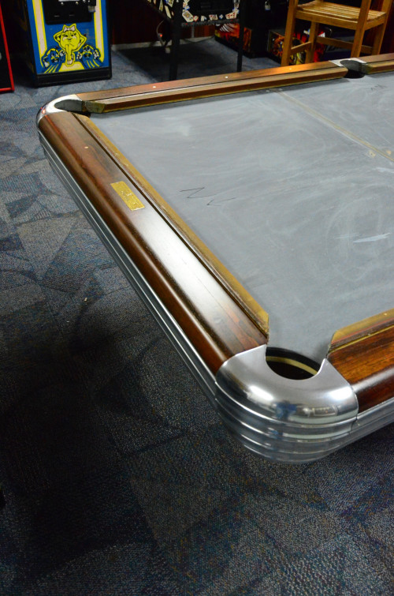
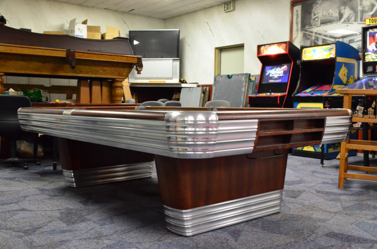
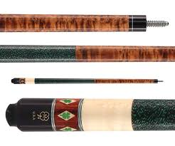
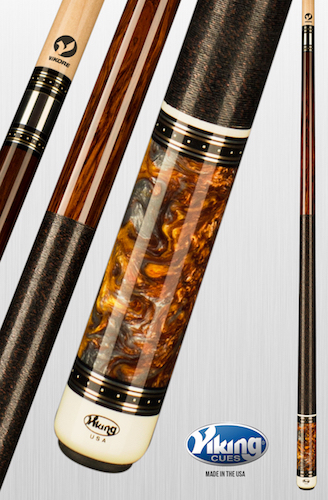
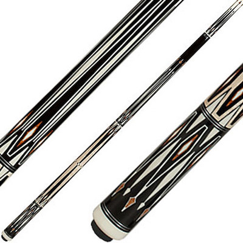

Tables, Cues, and Felt

New and Used Tables
Restored Brunswick Centennial
Professionally Restored Circa 1960 Brunswick Centennial Pool Table
$10,000.
Shipping avaliable, includes professional installation (within 100 miles of Salem, OR), your choice of felt color, full set of Aramith balls, a set of 4 upgrade house cues


For the discriminating Pool Player The Iconic Table from the era, featured in countless movies, available exclusively from The Cue Ball
Olhausen Black Hawk 3.5 x 7 Pool Table
$2795

Cues
McDermott

Viking

Pechauer

We are your factory source for top brands such McDermott, Viking, Pechauer and more. We have 100's of Pool Cues in stock, too.
Table Felt
Simonis and Championship Billiard Fabric

From felt and rubber to coin ops and pockets, The Cue Ball has it in-stock